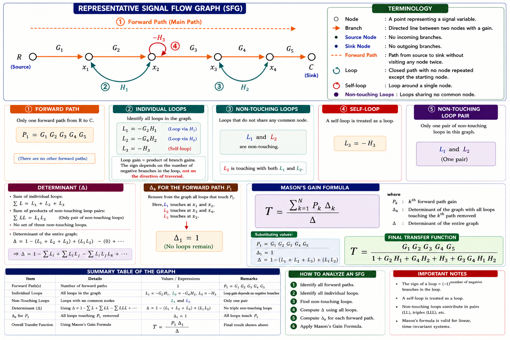
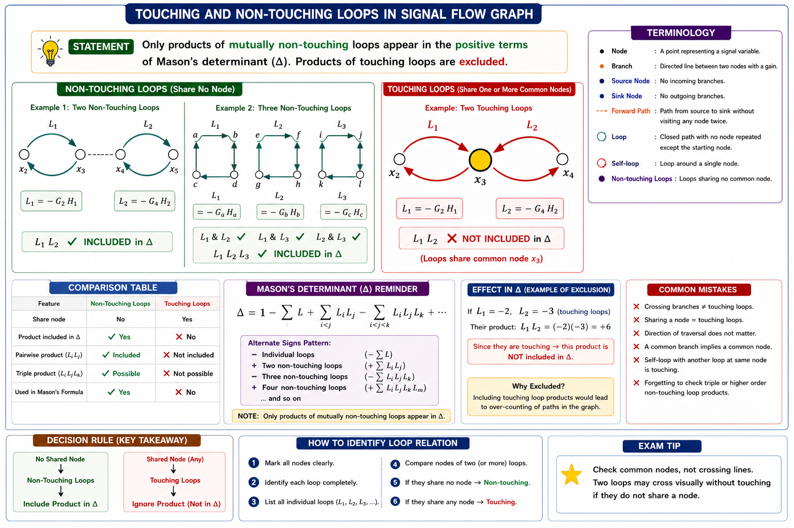
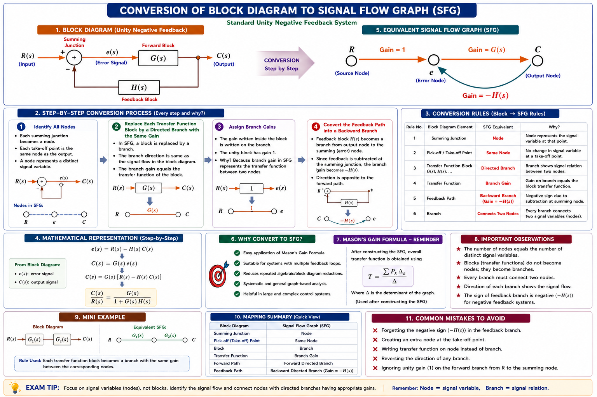
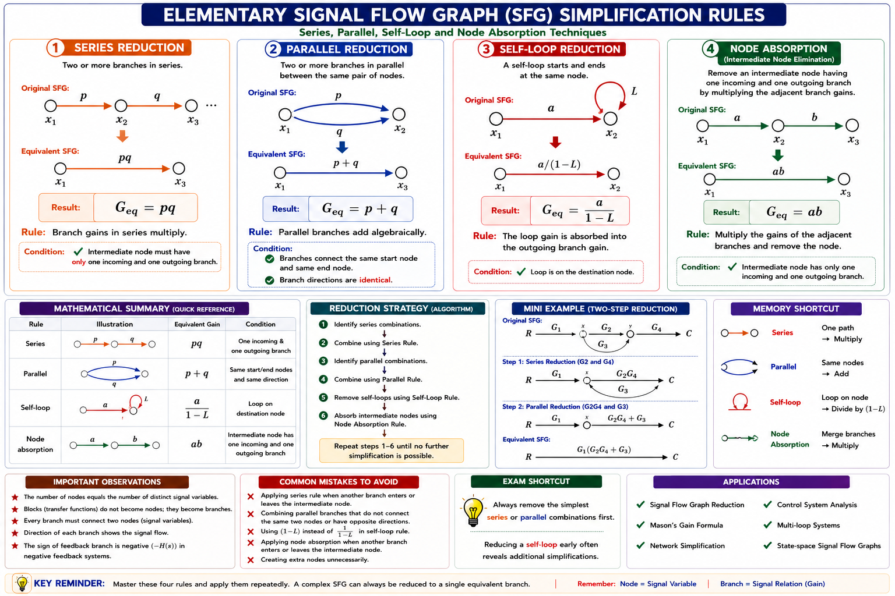

Nodes, branches, forward paths, loops, non-touching loops, and the complete derivation and application of Mason's Gain Formula — a powerful alternative to block diagram reduction for finding the transfer function of complex, multi-loop control systems, with full GATE and IES coverage and solved numericals.
In Chapter 2 you reduced block diagrams step by step — combining series and parallel blocks, shifting summing points, eliminating feedback loops — until a single block remained. This works, but for systems with many interacting loops the reduction becomes long, error-prone, and easy to mess up under exam time pressure. The Signal Flow Graph (SFG), introduced by S. J. Mason in 1953, solves this problem with a purely algebraic, topological approach: draw the system once as a graph of nodes and directed branches, then read off the transfer function directly using Mason's Gain Formula — no diagram redrawing required.
A signal flow graph represents a system of linear algebraic equations exactly the way a circuit diagram represents a system of physical connections. Every variable becomes a node, and every equation term becomes a directed branch with a gain (transmittance). Once drawn, the graph never needs "reduction" the way a block diagram does — Mason's formula extracts the answer directly from the graph's topology.

Signal flow graphs are the standard analysis tool wherever a system can be written as a set of simultaneous linear equations: state-space control system realisations, electrical network analysis (Mason originally developed the method for microwave amplifier and feedback amplifier design), flight control law diagrams, robotic actuator feedback loops, and power system stability studies. Any GATE-level closed-loop control system — servo motor position control, temperature control loops, aircraft pitch control — can be modelled and solved this way.
A signal flow graph is built from exactly two elements — nodes and branches. Understanding their precise definitions is essential because Mason's formula is stated entirely in terms of node and branch topology.
A node is a point representing a system variable (a signal) — such as an input, an output, or an intermediate summed quantity. Every node's value equals the algebraic sum of the signals arriving on all branches entering it.
A node with both incoming and outgoing branches is called a mixed node or chain node. Every intermediate node x1, x2, x3… in Fig 3.1 is a mixed node — it sums all incoming signals and forwards this sum out along every outgoing branch. A mixed node can be converted into a sink by adding an extra branch of unity gain — this trick is often used when the required output is at an intermediate mixed node.
A branch is a directed line segment joining two nodes, drawn with an arrowhead indicating the direction of signal flow. Each branch carries a gain (also called transmittance) — the multiplying factor applied to the signal as it travels along that branch. If node xj connects to node xk via a branch of gain ajk, then the branch contributes ajk·xj to the value of xk.
Every node value is the sum of (gain × source-node-value) over every branch entering that node.
| Property | Rule |
|---|---|
| Signal travel | Along a branch, only in the direction of the arrow |
| Branch gain | Multiplies the signal at the branch's tail node |
| Node value | Algebraic sum of all incoming branch signals (auto-summed — no separate summing symbol needed, unlike block diagrams) |
| Outgoing signal | The full node value is transmitted, unchanged, along every outgoing branch (no split loss) |
| Self-loop | A branch from a node back to itself, gain akk, contributes akkxk to xk |
In a block diagram, a summing junction (○) and a take-off/pick-off point (•) are drawn as separate symbols. In an SFG, both jobs are done automatically by a single node: it sums everything coming in and repeats that sum, unchanged, out along every branch leaving it. This is why SFGs are more compact.
Before Mason's formula can be applied, every possible route through the graph must be classified. GATE questions frequently test whether a candidate can correctly separate forward paths from loops, and touching loops from non-touching loops — this section builds that skill using Fig 3.1.
A path is any continuous succession of branches, traversed in the direction of their arrows, such that no node is encountered more than once.
A forward path is a path that starts at a source node and ends at a sink node, without passing through any node more than once. The forward path gain (Pk) is the product of all branch gains along that path.
A loop is a closed path that starts and ends at the same node, without passing through any other node more than once. The loop gain is the product of the gains of all branches forming that loop. A self-loop is the special case of a loop consisting of a single branch that starts and ends at the same node.
Trace every branch leaving a node until you return to a node already visited within that same trace. If the return is to the starting node, it's a loop. If a route reaches the sink C without repeating a node, it's a forward path. In Fig 3.1, notice L1 (x2↔x3) and L3 (self-loop at x3) share node x3 — they are touching loops. L2 (x3↔x4) and L1 share node x3 too, so L1 and L2 also touch each other through x3.
| Term | Definition | Example (Fig 3.1) |
|---|---|---|
| Path | Any route along branch arrows, no repeated node | x1 → x2 → x3 |
| Forward path | Source → sink, no repeated node | R → x1 → x2 → x3 → x4 → C |
| Path gain | Product of branch gains along a forward path | P₁ = G1·G2·G3·G4·G5 |
| Loop | Closed path, starts & ends at same node | x2 → x3 → x2 |
| Self-loop | Single branch, node to itself | x3 → x3 (gain −H3) |
| Loop gain | Product of gains around a loop | L1 = −G2H1 |
A path is not allowed to visit the same node twice. Students sometimes trace "loops within loops" as single forward paths — always check that every node in your traced route is distinct. Also remember: loop gains are usually taken with their sign already included (feedback branches are typically −H, giving negative loop gains).
Two loops are called non-touching if they do not share any common node. This single idea is the most exam-critical concept in this chapter — Mason's formula treats touching and non-touching loop combinations completely differently, and most numerical mistakes in GATE come from getting this classification wrong.
Loop La and loop Lb are non-touching if they have no node in common. If they share even a single node, they are touching. This applies to any pair of loops — and also to a forward path and a loop (a forward path either "touches" a loop by sharing a node with it, or it doesn't).

Applying this rule to the reference graph of Fig 3.1:
"Touching = sharing a table (node)." If two loops never sit at the same node, they can act completely independently — which is exactly why their gains simply multiply together in Δ. If they share a node, disturbing one loop necessarily disturbs the signal at the shared node, so they cannot be treated as independent — their product is excluded.
Mason's Gain Formula gives the overall transfer function between any source node and any sink node of a signal flow graph directly, using only the forward paths and loops identified in the previous two sections. No block-diagram-style reduction is needed.
Δk is not just "Δ minus the path." It is the determinant Δ recomputed using only the sub-graph of loops that do not touch forward path Pk (delete every loop that shares even one node with Pk, then rebuild Δ from what remains). If Pk touches every single loop in the graph, no loops remain, so Δk = 1 automatically.
| Step | Action |
|---|---|
| 1 | Identify the source node and sink node between which T is required |
| 2 | List every forward path Pk and compute each path gain |
| 3 | List every individual loop Li and compute each loop gain (include sign, usually negative for negative feedback) |
| 4 | Find all pairs of non-touching loops, then triples, and so on |
| 5 | Assemble Δ using the alternating-sign series above |
| 6 | For each Pk, delete loops touching it and recompute Δk from the surviving loops |
| 7 | Substitute into T = ΣPkΔk / Δ |
Negative feedback branches are drawn with gain −H, so their loop gain already carries the minus sign (e.g. L = −GH). Do NOT apply an additional minus sign when substituting into "−ΣL" — that would double the sign and flip the answer. Always substitute the loop gains exactly as computed from the graph, sign included.
Let's now find T = C(s)/R(s) for the reference graph of Fig 3.1 completely, using the seven-step procedure from Section 3.5.
Source = R, Sink = C.
Only one forward path exists — the full chain from R to C:
All three loops pass through node x3, so every possible pair — (L1,L2), (L1,L3), (L2,L3) — shares node x3. There are no non-touching loop pairs in this graph, so all higher-order terms in Δ vanish.
The forward path P1 passes through nodes x1, x2, x3, x4 — it touches every loop (L1, L2, L3 all involve x2, x3, or x4). Since no loop is left untouched by P1:
If H1 = H2 = H3 = 0 (no feedback at all), T reduces to G1G2G3G4G5 — the plain product of forward gains, exactly as expected for a purely feed-forward system. This "switch off the feedback and check" trick is a fast way to verify any Mason's formula answer under exam conditions.
SFGs can be built from two different starting points that appear equally often in GATE/IES papers: (a) a set of simultaneous algebraic equations, or (b) an existing block diagram. Both routes are shown here.
Each equation of the form xk = Σ ajkxj becomes one node xk with an incoming branch of gain ajk from every node xj that appears on its right-hand side.
Step 1: Create one node for every variable: x1, x2, x3.
Step 2: For x2 = a12·x1 + a32·x3 — draw a branch x1→x2 with gain a12, and a branch x3→x2 with gain a32.
Step 3: For x3 = a23·x2 + a13·x1 — draw a branch x2→x3 with gain a23, and a branch x1→x3 with gain a13.
The resulting graph has a loop x2→x3→x2 (gain a23·a32) and two forward-type branches from x1.
Unlike block diagrams, where the drawing order affects layout complexity, the SFG built from a set of equations is topologically identical no matter what order the equations are taken in — because each equation only fixes the incoming branches of one node.
Every summing junction and take-off point in a block diagram becomes a node in the SFG; every block becomes a branch carrying that block's transfer function as its gain.
| Block Diagram Element | SFG Equivalent |
|---|---|
| Block, gain G(s) | Branch with transmittance G(s) |
| Summing junction (± inputs) | Node — incoming branches carry +1 or −1 as appropriate |
| Take-off point | Same node — value repeats unchanged on every outgoing branch (no extra symbol needed) |
| Series blocks | Series branches — gains multiply along the chain |
| Feedback path, gain H(s) | Branch of gain −H(s) (negative feedback) or +H(s) (positive feedback) returning to the summing node |

For Fig 3.3: one forward path P1 = G(s), one loop L1 = −G(s)H(s), so Δ = 1 + G(s)H(s), Δ1 = 1. This gives T = G(s) / (1 + G(s)H(s)) — exactly the familiar standard negative-feedback closed-loop formula from Chapter 2, confirming that SFG and block diagram methods always agree.
Although Mason's Gain Formula solves any graph directly without redrawing, GATE and IES also test the classical graph reduction rules — useful for simplifying a graph before applying Mason's formula, or for questions that specifically ask for an equivalent simplified SFG.

For a graph with 1–2 forward paths and 1–2 loops, Mason's formula directly is usually faster than reduction. Reduction rules become useful mainly when a question explicitly asks you to simplify the graph itself, or when eliminating an obviously redundant self-loop first makes the remaining loop-touching analysis easier to see.
This comparison table consolidates the terminology mapping and is one of the most frequently revisited references while solving mixed-format GATE questions that switch between the two representations.
| Aspect | Block Diagram | Signal Flow Graph |
|---|---|---|
| Basic element | Block (rectangle) with transfer function | Directed branch with gain (transmittance) |
| Summing junction | Explicit circle (○) with ± signs | Implicit — every node auto-sums its inputs |
| Take-off point | Explicit dot (•) | Implicit — every node repeats its value on all outputs |
| Applicable only to | Linear systems | Linear systems only (same restriction) |
| Reduction method | Step-by-step block reduction (series, parallel, feedback rules) | Mason's Gain Formula — single algebraic expression, no redrawing |
| Best suited for | Simple, 1–2 loop systems; visualising physical signal flow | Complex, multi-loop systems; fast numerical evaluation |
| Intermediate variables | Not always explicitly shown | Every intermediate variable is a labelled node |
| Originator | Standard control-theory notation | S. J. Mason (1953) |
Because both methods solve the same underlying set of linear signal equations, a correctly drawn SFG and a correctly reduced block diagram of the same system always produce the same transfer function — as verified in Section 3.7's example. Choosing between them is purely a matter of which is faster for the problem at hand.
Four fully worked numericals — chosen to cover non-touching loops with the +ΣLbLc term, multiple forward paths with different cofactors, a direct numeric evaluation of the Section 3.6 derivation, and a block-diagram-to-SFG conversion — the four patterns GATE most commonly tests.
Forward path gain:
Loop gains:
Non-touching check: L1 involves nodes x1,x2 only; L2 involves nodes x3,x4 only — no shared node, so L1 and L2 are non-touching.
P1 passes through x1,x2,x3,x4 — it touches both loops, so Δ1 = 1.
Forgetting the +L1L2 term (a very common slip) would give Δ = 1+2.5 = 3.5 and a wrong answer of T = 13.7. Always check every loop pair for a shared node before finalising Δ.
Forward path gains:
Only one loop (self-loop at x3, gain f = 0.2), so no non-touching products exist:
Cofactors: P1 passes through x3 — it touches the self-loop, so Δ1 = 1. P2 bypasses x3 entirely — it does NOT touch the self-loop, so the loop survives in Δ2:
It is tempting to use Δ1 = Δ2 = 1 for every forward path — wrong whenever a path bypasses a node that carries a loop. Always check each forward path against every loop individually.
This confirms that once the symbolic transfer function is derived (Section 3.6), any numeric variant of the same graph topology is solved in seconds by direct substitution — the real payoff of Mason's formula over repeated block-diagram redrawing.
From Fig 3.3: P1 = G(s) = 10, single loop L1 = −G(s)H(s) = −(10)(0.4) = −4.
Both methods give T = 2, as they must — Mason's formula on the SFG and the standard closed-loop reduction formula on the block diagram are two notations for the identical algebra.
Mason's Gain Formula is one of the highest-yield topics in the Control Systems syllabus — appearing almost every year across GATE EE/EC/IN and IES. The patterns below are built in the style of the most frequently repeated question types, marked by probability of appearance. 🟢 HIGH
For a signal flow graph with a single forward path of gain P and a single loop of gain L (touching the path), the transfer function C/R is:
Explanation: With one forward path touching the only loop, Δ1 = 1 and Δ = 1 − L, giving T = P/(1−L). This is the most repeated single-loop pattern — always identify Δ before writing the final ratio.
Two loops L1 and L2 in a signal flow graph share no common node. The term this pair contributes to the graph determinant Δ is:
Explanation: Products of gains of pairwise non-touching loops enter Δ with a positive sign, as the second term of the alternating series 1 − ΣL + ΣLbLc − … This directly tests the sign convention.
An SFG has 2 forward paths and 3 individual loops, and no pair of loops is non-touching. Forward path P2 touches only 2 of the 3 loops. Its cofactor Δ2 equals:
Explanation: Δk is Δ recomputed using only the loops NOT touching Pk. If exactly one loop (L3) is untouched by P2, then Δ2 = 1 − L3 — no non-touching-pair term since only one loop survives.
Which of the following is NOT a valid operation when converting a block diagram to a signal flow graph?
Explanation: A take-off point maps to the same node in the SFG as the signal's origin — not a separate node. This conceptual trap is tested repeatedly at IES level.
A forward path in a signal flow graph passes through every loop present in the graph. The cofactor Δk associated with this forward path is:
Explanation: If a forward path touches every loop, no loops survive for its cofactor, so Δk = 1 by definition — a shortcut applying to most single-forward-path GATE problems.
Roughly 70% of GATE-level Mason's Gain Formula questions reduce to correctly identifying (i) whether loops touch, and (ii) whether a given forward path touches a given loop. Master the node-sharing check from Sections 3.3–3.4 and the rest of the formula becomes pure substitution.
Have a question on signal flow graphs, Mason's Gain Formula, non-touching loops, or SFG reduction? Type below or pick a suggestion.
Node = variable; auto-sums inputs, repeats value on all outputs. Branch = directed line with gain (transmittance). Source node: outputs only. Sink node: inputs only. Mixed node: both.
Forward path: source→sink, no repeated node. Path gain = product of branch gains. Loop: closed path, same start/end node. Self-loop: single branch, node to itself.
Two loops are non-touching if they share NO common node. Non-touching pairs give +ΣLbLc term in Δ. Touching loops (share a node) are excluded from that term.
T = ΣPkΔk / Δ. Δ = 1 − ΣL + ΣLbLc − ΣLdLeLf + … Δk = Δ with loops touching Pk removed. If Pk touches every loop, Δk = 1.
Series: gains multiply. Parallel: gains add. Self-loop L at node: divide incoming branch gains by (1−L). Node absorption: multiply incoming × outgoing gains.
Block → branch (gain = TF). Summing junction → node. Feedback H(s) → branch of gain −H(s). Both methods always give identical T(s) for the same system.
All technical content is derived from the following standard textbooks and learning resources. All explanations, derivations, diagrams and examples are original to Aarova AI.